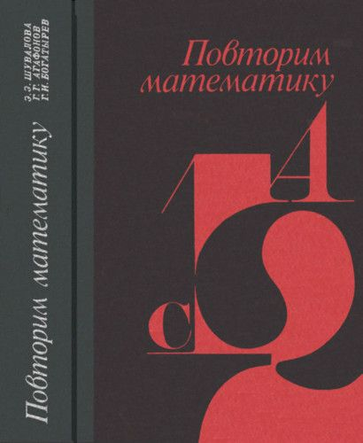
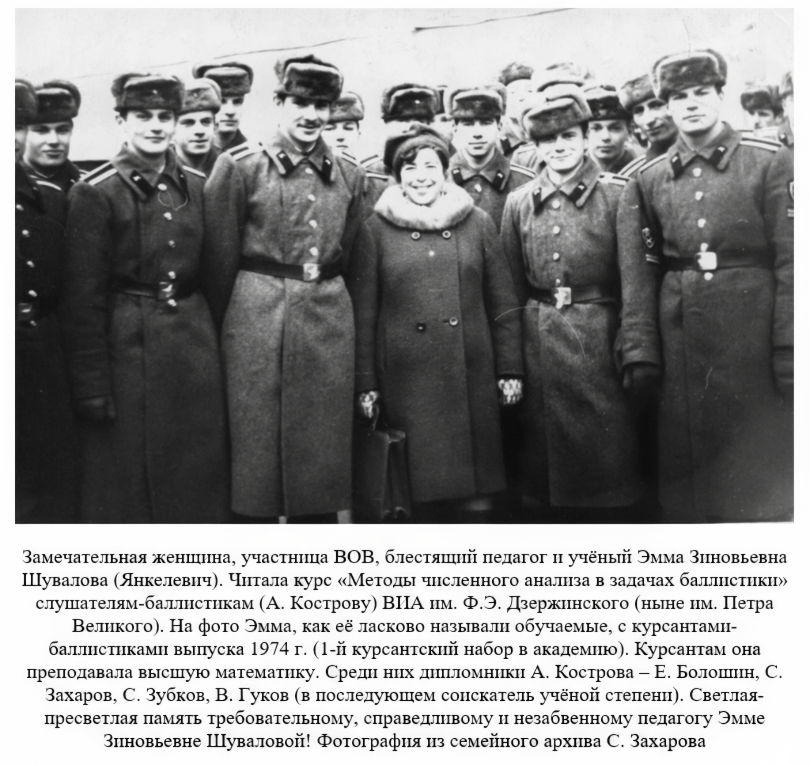
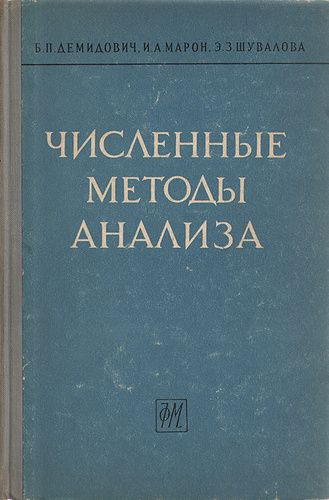
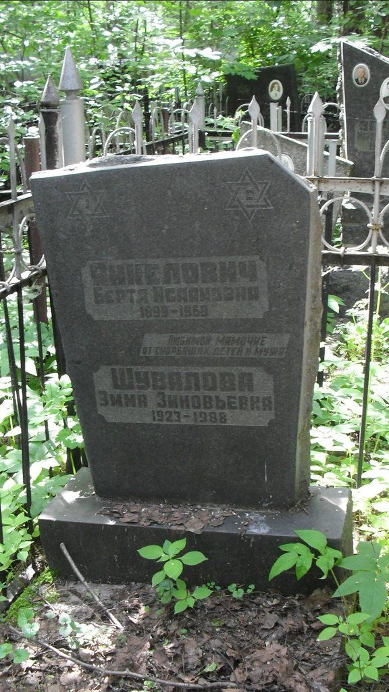
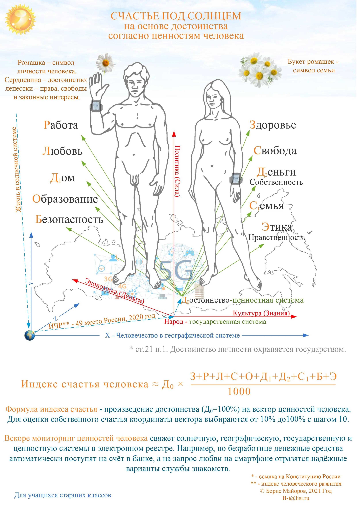

С этого курса математики началось моё знакомство с Эммой Зиновьевной в 1972 году в Балабаново во время отбора солдат и сержантов для поступления в Академию.
Впервые я повстречал женщину легко и свободно владеющую основами математики. Несомненно, она сыграла свою роль в том, что я после недолгих сомнений согласился на учёбу и изучение баллистики после сдачи экзаменов.


Фото сЛичный сайт Кострова А. В. (kostrov-av.ru)

https://toldot.ru/images/cemetery/moscow_malahovka/3_1_nz_1_17/SDC13360.JPG
{kind=link}
Страсть, которая двигала этим поколением замечательных людей,по моему мнению, была рождена чрезмерной несправедливостью, обрушившей на них в ХХ веке.
Им некогда было разбираться в социальных задачкахсовременности. На выпускном вечере я извинился перед Эммой Зиновьевнойза недостаточное рвение в изучение её науки и объяснил ей, что потрачу большуючасть своих сил на решение социальных проблем, которые были мне болеенепонятными чем теория полёта или аэродинамика снаряда.


Успел сделать немного.
Ввёл в обиход систему ценностных координати основы численных методов анализа ценностей и формулу для вычисления индекса счаситья.
Наверно, это результат обоюдной страсти к математике.
Полагаю, что значение ценностнойсистемы для личности и сообщества в ближайшее время будет возрастать.
Без неё, как без Декартовой системы дляпространства, современная цивилизация не сможет развиваться устойчиво.
Вскоре у каждого в смартфоне появитсяиндивидуальный показатель счастья и научно обоснованные численные методы его мониторинга иварианты для его роста.